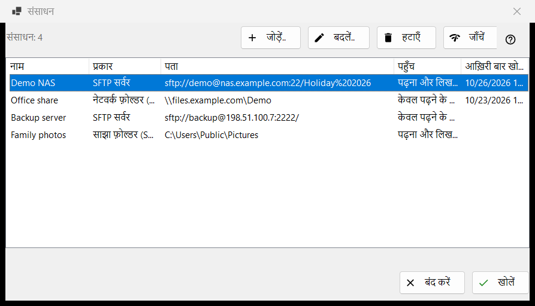
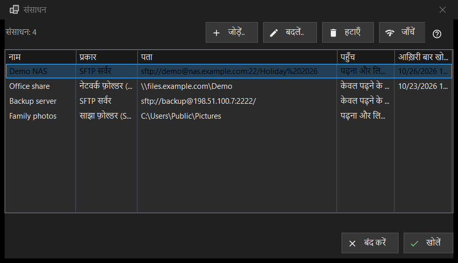

संसाधन
यह किस लिए है
सर्वरों और नेटवर्क फ़ोल्डरों की वह सूची जिन्हें व्यूअर खोल सकता है: SFTP सर्वर, Windows नेटवर्क फ़ोल्डर (SMB) और वे फ़ोल्डर जिन्हें Share Manager इस कंप्यूटर से साझा करता है। यह फ़ोल्डर मेनू में संसाधन प्रबंधित करें.. कमांड से खुलती है; यही सूची सेटिंग विंडो के सर्वर और संसाधन पृष्ठ पर भी है।


इस क्रम में
- जोड़ें.. बटन दबाकर सर्वर की जानकारी भरें, या और बटन से सेटिंग फ़ाइल लाएँ।
- नई पंक्ति चुनें और जाँचें दबाएँ।
- खोलें दबाएँ, या पंक्ति पर डबल-क्लिक करें: व्यूअर कनेक्ट होकर सर्वर का फ़ोल्डर दिखाता है।
- पता या पासवर्ड बदलने के लिए संपादित करें.. और किसी संसाधन को भुला देने के लिए हटाएँ का उपयोग करें।
तत्व
सूची
कॉलम: नाम, प्रकार, पता, पहुँच और आख़िरी बार खोला। प्रकार SFTP सर्वर, नेटवर्क फ़ोल्डर (SMB) या साझा फ़ोल्डर (Share Manager) होता है; पहुँच में केवल पढ़ने के लिए या पढ़ना और लिखना लिखा होता है। सूची के नीचे की एक पंक्ति संसाधनों की गिनती बताती है, और कोई संसाधन न होने पर विंडो एक संकेत और जोड़ें.. बटन दिखाती है। संपादित करें.., हटाएँ और जाँचें (तथा संसाधन विंडो की निचली पंक्ति में खोलें) के लिए चुनी हुई पंक्ति ज़रूरी है; तब तक उनके टूलटिप में लिखा होता है: पहले सूची से एक संसाधन चुनें
जोड़ें.. और संपादित करें..
जोड़ें.. नए संसाधन का फ़ॉर्म खोलता है और संपादित करें.. चुने हुए संसाधन का फ़ॉर्म। वहाँ लिखा गया पासवर्ड आपके Windows खाते के लिए एन्क्रिप्ट करके सहेजा जाता है, सूची में कभी नहीं।
हटाएँ
हटाएँ पहले पूछता है, और डिफ़ॉल्ट उत्तर नहीं है। सवाल में संसाधन का नाम होता है और यह बताया जाता है कि उसके लिए सहेजा गया पासवर्ड भी हट जाएगा, जबकि सर्वर पर मौजूद फ़ाइलें प्रभावित नहीं होतीं।
जाँचें
जाँचें चुनी हुई पंक्ति को खोले बिना परखता है। SFTP सर्वर के लिए यह संसाधन के हर ज्ञात पते को आज़माता है और हर एक की रिपोर्ट host:port के रूप में एक निष्कर्ष के साथ देता है: एक भी जीवित SSH उत्तर जाँच को सफल बना देता है, खुला पोर्ट जो SSH नहीं है चेतावनी है, और चुप्पी विफलता है। कोई पासवर्ड नहीं भेजा जाता। नेटवर्क फ़ोल्डर के लिए यह सहेजे गए पासवर्ड से शेयर खोलता है और उसका शीर्ष फ़ोल्डर पढ़ता है; यदि कोई पासवर्ड सहेजा नहीं है तो यह आपसे उसे संपादित करें.. के ज़रिए दर्ज करने को कहता है। Share Manager पंक्ति के लिए यह केवल देखता है कि फ़ोल्डर इस कंप्यूटर पर मौजूद है या नहीं।
खोलें
खोलें, या किसी पंक्ति पर डबल-क्लिक, संसाधन को व्यूअर को सौंप देता है, जो कनेक्ट होकर उसका फ़ोल्डर दिखाता है। यदि पासवर्ड सहेजा नहीं है, या सहेजा हुआ अस्वीकार हो गया, तो पहले एक छोटी विंडो उसे माँगती है।